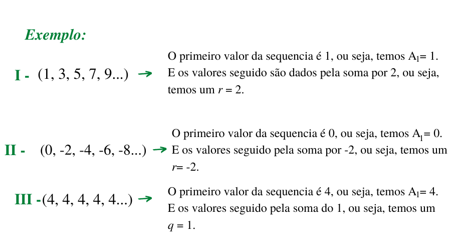
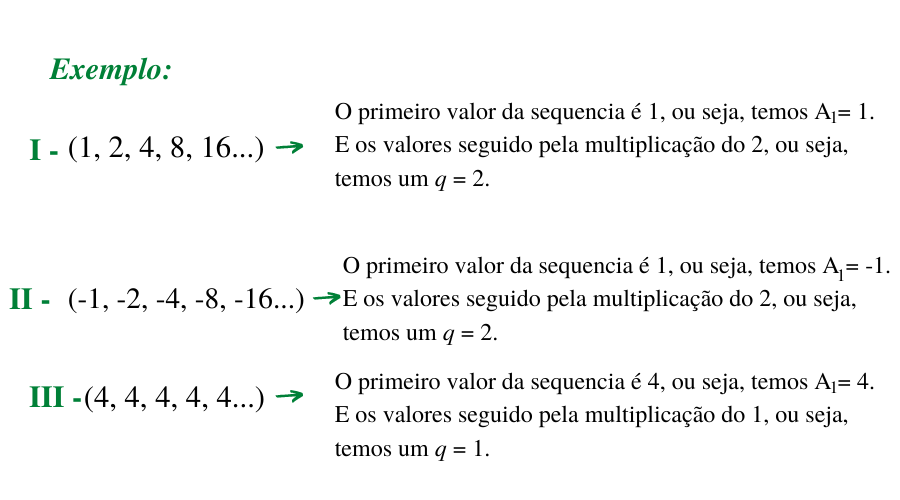

Antes de saber a definição de progressão aritmetica é necessario entender como funciona uma sequeência.
Sequências numericas é uma sucessão de numeros com uma ordem/padrão especifico entre eles, que associa cada elemento n ∈ ℕ∗ em um unico elemento an ∈ ℕ.
f: ℕ∗ → ℝ
ℕ∗ → posição dos termos da sequencia
a) 0, 2, 4, 6, 8...
---> A sequência acima apresenta um padrão de numeros pares, ou seja, soma-se 2 tendo iniciado em 0.
b) 1, 3, 5, 7, 9...
---> A sequência acima apresenta um padrão de numeros impares, ou seja, soma-se 2 tendo iniciado em 1.
c) 2, 4, 8, 16, 32...
---> A sequência acima apresenta um padrão de numeros que iniciou com expoente 1 e seguiu com a potencia de 2
No quesito matematico, o que interressa nas sequencias são aquelas que são possiveis estabelecer leis de formação. Para fazermos isso, utiliza-se 3 formas:
Deve-se utilizar de duas regras:
1° - identificar o primeiro termo = A1
2° - calcular cada termo (An) a partir do seu antecedente (A n-1)
a) Escreva os 10 primeiros termos da sequencia definida por:
A1 = 2 || An = An-1 + 3, n >= 1
Resposta: 2, 5, 8, 11, 14...
b) Crie uma formula de recorrencia a partir do termo:
--> 2, 5, 8, 11, 14...
Resposta: A1 = 2 || An = An-1 + 3
--> 1, 3, 5, 7, 9...
Resposta: A1 = 1 || An = An-1 + 2
--> 2, 4, 8, 16, 32...
Resposta: A1 = 2 || An = 2An-1
Quando se usa uma fórmula chamada de Termo Geral, que consiste em expressar o valor de An em função de n.
a) Escreva os 5 primeiros de uma sequencia infinita, cujo termo geral é dado por 3n +1, em que por n ∈ ℕ∗:
n=1 → a1 = 4
n=2 → a1 = 7
n=3 → a1 = 10
n=4 → a1 = 13
n=5 → a1 = 16
Resposta: (4, 7, 10, 13, 16, ...)
b) Estabeleça o termo geral, para n>=1:
--> 0, 2, 4, 6, 8, 10...
Resposta: An= 2n-2
--> 1, 3, 5, 7, 9...
Resposta: An = 2n-1
--> 2, 4, 8, 16, 32...
Resposta: An = 2"
Quando é apresentada a propriedade dos termos de uma sequencia.
a) Escreva os 10 primeiros de uma sequencia infinitaformada pelos numeros primos positivos em ordem crescente.
Resposta: (2, 3, 5, 7, 11, 13, 17, 19, 23, 29, ...)
Conceito:
A progressão Aritmetica (PA) é uma sequencia numerica em que cada numero é definido pelo resultado do valor anterior somado com uma constante denonimidada em r. Resultando na mesma sempre sendo a diferença entre os valores da sequência
Para que seja poossivel encontrar um determinado termo dentro da razão de PA, se estipulou uma fórmula seguindo a lógica da que a posição desejada sempre será o primeiro valor somado com a constante de seu anterior
Observação:
o Podem aparecer o primeiro termo representado por A0, pois naquele momento é mais conveniente.
Toda sequência é definido como função, e a a sequeência da progressão aritmetica é semelhante ao crescimento linear de uma Função Afim
Se considerarmos a PA, é possivel estabelecer uma relação gráfica dos pontos de n (posição dos termos) e An(termos), em que n fica no eixo x e An no eixo y.
Para estabelecer essa conexão podemos usar a fórmula do termo geral, para assi estabelecer uma relação entre a posição dos temos e a sua posição
PA: (1, 1), (2, 3), (3, 5), (4, 7), (5, 9), …
Observação:
O gráfico desta PA não pode ser uma reta, uma vez que seu dominio constitiu apenas os numeros reais, sem o zero, fazendo com que o mesmo tenha apenas pontos alinhados
Nas sequências finitas o primeiro e o ultimo termo são chamados de extremos e os restante é denominado como meio.
Interpolar significa obter uma PA de externos a e b com n= k + 2 termos, ou seja, descobrir os valores do meio entre os termos extremos.
a) Interole 5 meios aritmeticos entre 10 e 220
n = k +2 = 7
An = 220
A1 = 10
r = ?
An = A1 + (n-1)*r
220 = 10 + (7-1)*r
220 - 10 = 6*r
r= 210/6
r = 35
PA = (10, 45, 80, 115, 185, 220)
Ao termos uma PA finita é possivel usarmos uma fórmula pra somar todos os termos da mesma sem precisa realemente soma-los.
a) Calcule a soma dos 25 termos iniciais da PA (1, 7, 13,...)
n = k + 2 = 6
A25 = ?
A1 = 1
r = ?
An = A1 + (n-1)*r
A25 = 1 + (25-1)*6
A25 = 1 + 24 * 6
A25 = 145
Agora usamos que obtemos o valor extremo usamos na fórmula:
Sn = ((A1 + An)*n/2
S25 = ((1 + 145)*25/2
S25 = 1.825
Conceito:
A progressão Aritmetica (PA) é uma sequencia numerica em que cada numero é definido pelo resultado do valor anterior multiplicado por uma constante denonimidada em q.
Para que seja poossivel encontrar um determinado termo dentro da razão de PG, se estipulou uma fórmula seguindo a lógica da que a posição desejada sempre será o primeiro valor multiplicado pela constante send elevado ao termo anterior
Observação:
o Podem aparecer o primeiro termo representado por A0, pois naquele momento é mais conveniente.
Se pensarmos em uma PG como uma função exponencial, é possivel associar os numeros naturais positivos (n) a um numero real dado pela expressão: An = A1 * q^n-1
Observação:
O gráfico desta função não pode ser uma curva exponencial, uma vez que seu dominio constitiu apenas os numeros reais, sem o zero, fazendo com que o mesmo tenha apenas pontos alinhados
Interpolar significa obter uma PG de externos a e b com n= k + 2 termos, ou seja, descobrir os valores do meio entre os termos extremos. Para encontra-los é necessario descobrir a razão.
a) Interole 8 meios aritmeticos entre 5 e 2560
n = k + 2 = 10
An = 2560
A1 = 5
r = ?
An = A1*q^n-1
2560 = 5q^9
q^9 = 2560/5
q^9 = 512
q = 512 ^1/9
q=2
PG = (5,10, 20, 40, 160, 640, 1280, 2560)
Ao termos uma PG finita é possivel usarmos uma fórmula pra somar todos os termos da mesma sem precisa realemente soma-los.
a) Calcule a soma dos 10 termos iniciais da PG (1, 3, 9, 27, ...)
n = k + 2 = 10
S10 = ?
A1 = 1
q = 3
Sn = A1 * ((1-q^n)/(1-q))
S10 = 1 * ((1-3^10)/(1-3))
S10 = 1 * ((1- 59.049)/(-2))
S10 = 1 * ( 59.048/ 2)
S10 = 29.524